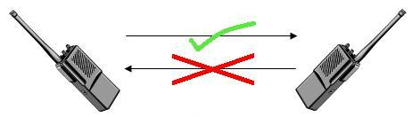
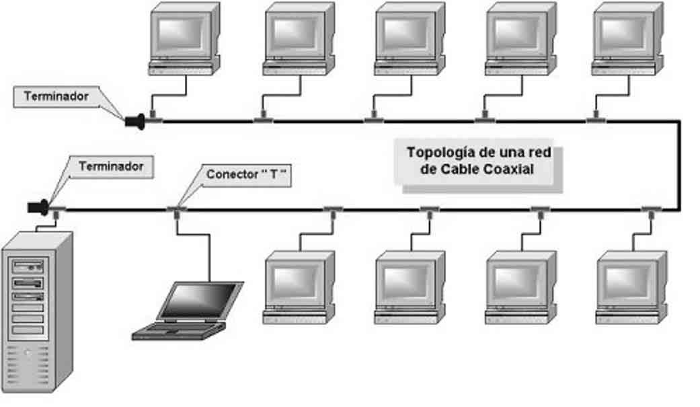
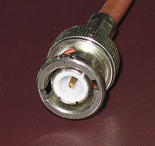
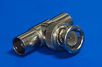
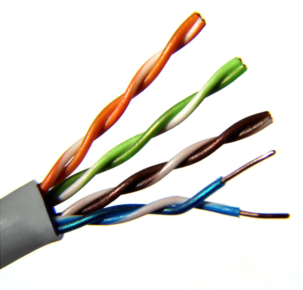
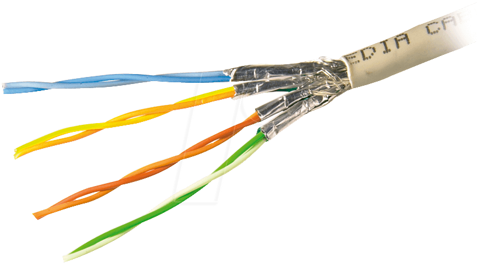
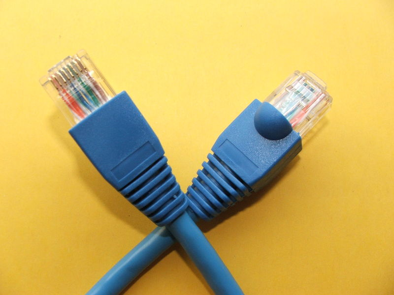
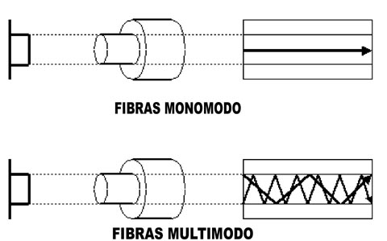
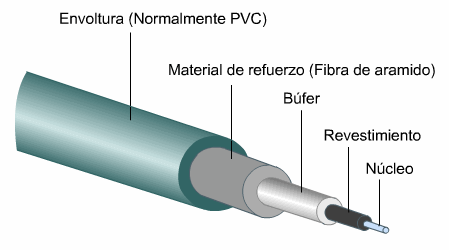
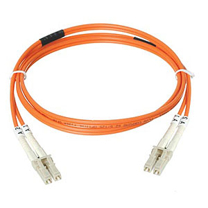

Medios de comunicación cerrados
1 - Introducción al tema redes
1.1 - Medio de comunicación
- Emisor es quien envía un mensaje
- Receptor es quien se le envía mensaje (quien lo recibe)
- Canal es el medio físico por el cual se transmite el mensaje
- Código es la forma que toma el mensaje mientras es transmitido por el canal
- Retroalimentación es un proceso en el que el emisor y el receptor intercambian sus roles.
Los medios de comunicación se clasifican de acuerdo a los roles que pueden tomar las partes.
Full-duplex

Half-duplex

Simplex
1.2 - Tasas de transferencia
A la tasa de transferencia se le conoce vulgarmente como velocidad subida o descarga. Dado que velocidad es una magnitud física resultado de dividir desplazamiento entre tiempo transcurrido, se le da el nombre tasa de transferencia al resultado de dividir la cantidad de datos transmitidos entre el tiempo transcurrido.
Ejemplo
Se descarga 1GB, en una hora.
1 GB es la cantidad de datos transmitidos y 1 hora es la tiempo que demora en transmitirse.
Si bien es correcto decir que la descarga se realizó a 1GB/h, para facilitar la comparación
entre tasas de transferencia, se usan mayormente las unidades sobre segundos.
- Como una hora son 60 minutos, y un minuto son 60 segundos, una hora son 3600 segundos.
- 1GB son 1024MB, si en una hora se descargaron 1024 MB, en un minuto se descargaron 17MB.
- 1MB son 1024KB, entonces 17MB son 17408KB
- Si en un minuto se descagan 17408KB, en un segundo se descargan 290KB
1.3 Alternativas al uso de redes
Existen medios de transferencia alternativos a una red como son el uso de medios de almacenamiento externos (discos externos, pendrives, tarjetas SD, etc). Al depender de la acción del usuario, el tiempo que se demora en hacer una transferencia de esta forma es siempre mayor o igual a medio minuto. Resulta eficiente el uso de estos para enviar paquetes grandes de información a velocidades muy grandes, mientras que las redes son eficientes para transmitir paquetes de menor tamaño en tiempo real.2 - Cables coaxiales
El cable coaxial está formado por un conductor central encargado de llevar la información y una malla que lo recubre que sirve como tierra y retorno de las corrientes. Estos conductores están aislados entre sí por el dieléctrico y el cable se aisla del entorno con una cubierta de plástico.

B - Malla
C - Aislante
D - Conductor central
2.1 - Topología de redes en bus con cables coaxiales
2.2 - Conector BNC y conector BNC en T
 3 - Pares trenzados, cables UTP y STP
Un par trenzado consiste en dos conductores eléctricos aislados y entrelazados entre sí, el objetivo es anular las interferencias y ruidos externos en la señal.
Los cables de red constan de 4 pares trenzados y por lo tanto de 8 conductores. La calidad del cable está en la cantidad de trenzas por metro que tiene, debido a que a mayor cantidad de trenzas, menor diafonía.
El cable recomendado para la instalación de red de una casa es el UTP de categoría 5, mientras que algunas empresas utilizan categoría 6. A partir de la categoría 7, los pares trenzados se encuentran aislados entre sí, por lo que el nombre cambia de UTP (par trenzado sin blindar) a STP (par trenzado blindado).
3.1 - UTP: Unshielded Twisted Pair
3.2 - STP: Shielded Twisted Pair
3.3 - Conector RJ45
4 - Fibra óptica
El cable de fibra óptica está formado internamente por fibra de vidrio. Esta fibra está protegida, existe un emisor de luz de un lado del cable y un receptor del otro. Los cables que emiten luz en línea recta se llaman monomodo. Los cables que hacen refractar la luz en el vidrio para tener múltiples rayos de luz se llaman multimodo. El cable multimodo se utiliza en las instalaciones de los edificios al poder llevar mayor cantidad de información, mientras que el monomodo se usa para distancias más grandes donde se busca una mayor velocidad. Físicamente el cable monomodo utiliza un núcleo de vidrio más delgado que el multimodo.
  